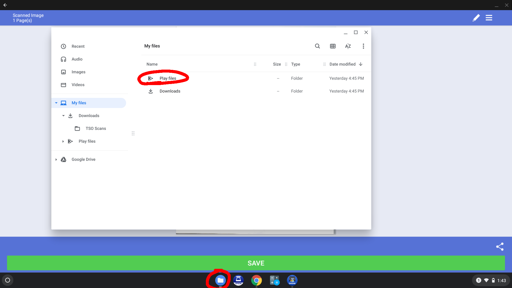
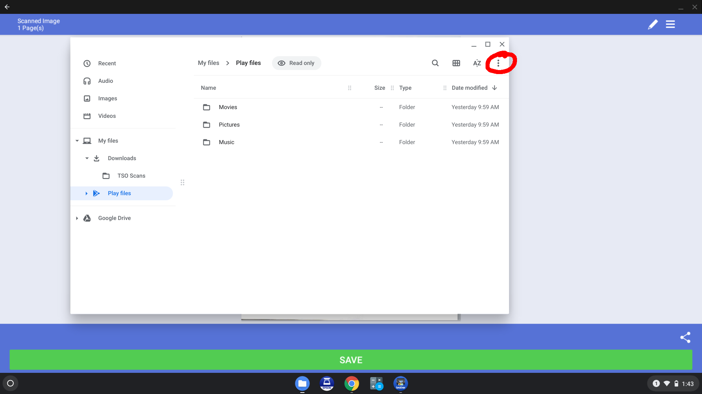
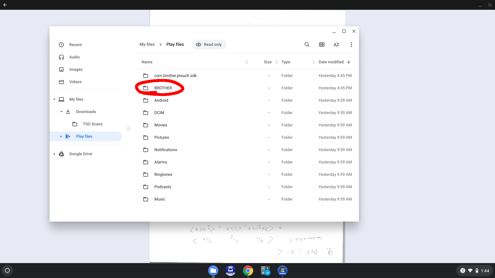
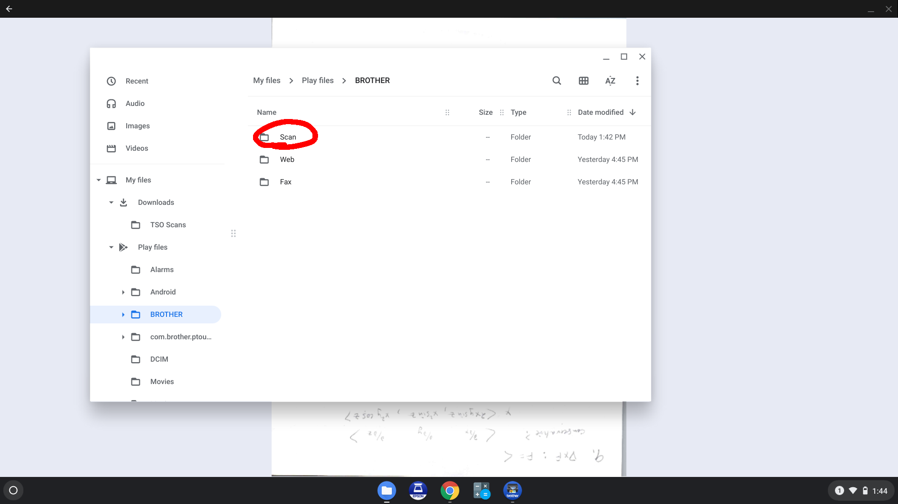
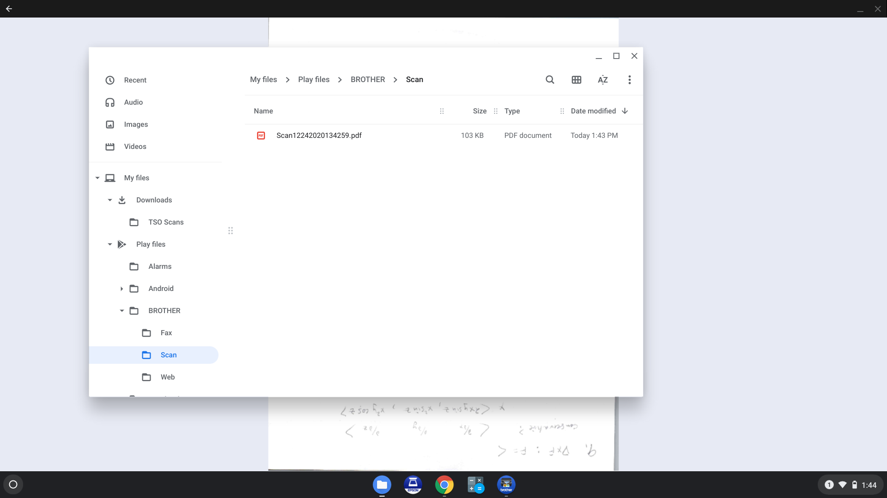
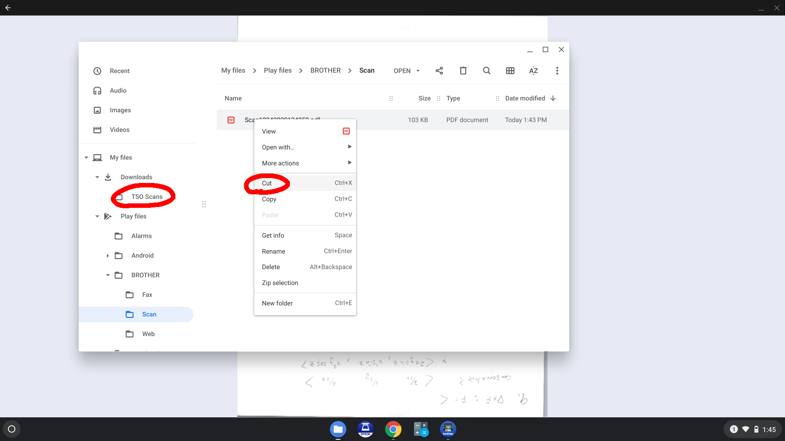
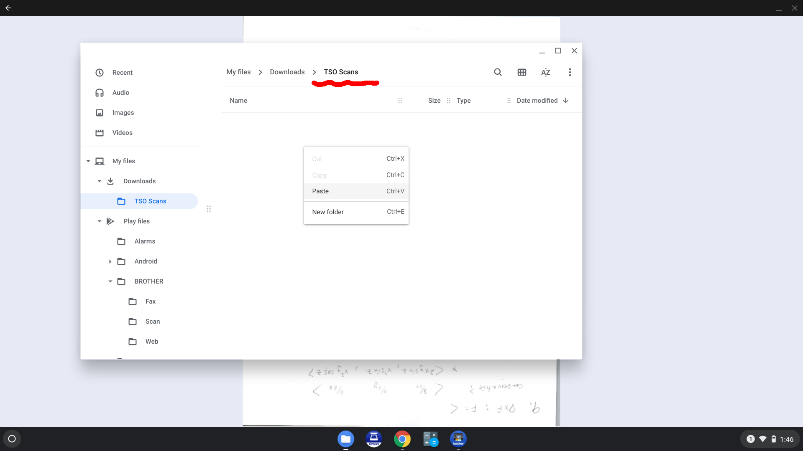
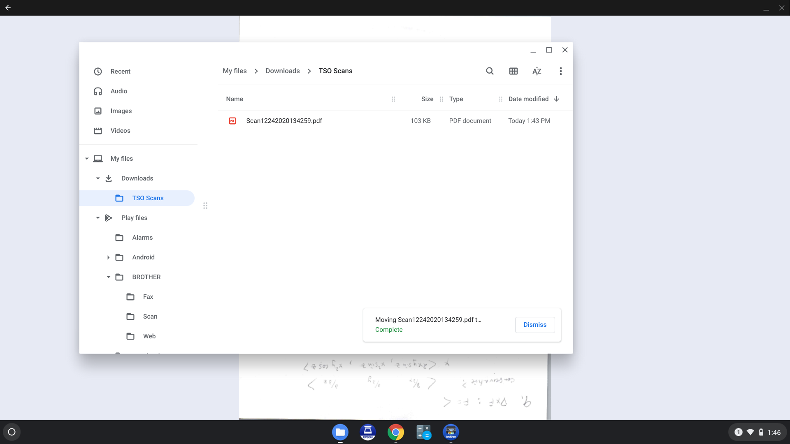
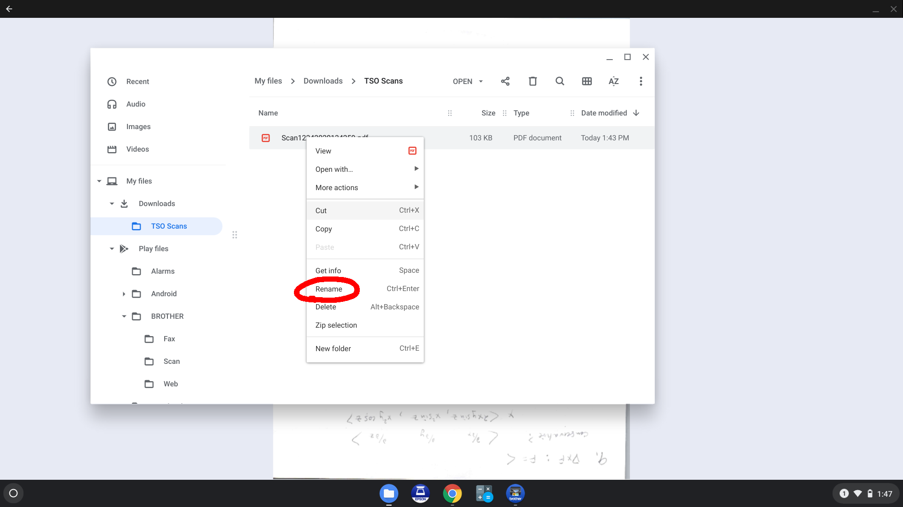

If you accidentally used the save button in the scanner, click on the "Files" icon on the dock (a file folder in a blue circle). Then open the folder "Play files".
Open the three-dot menu at the upper right, and choose "Show all Play folders."
Open the "Brother" folder.
Open the "Scan" folder.
Right-click the file you want to move.
Click "cut", then open the "TSO Scans" folder.
Right-click in the page and click "Paste".
Right-click on the filename.
Click "Rename" and type in the new name.
